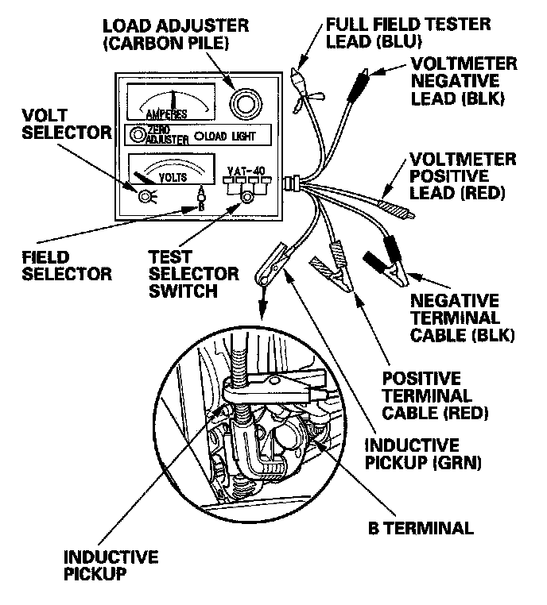

Alternator and Regulator Circuit Troubleshooting
Alternator and Regulator Circuit Troubleshooting1. Make sure the battery connections are good and the battery is fully charged.
2. Remove the engine cover.

3. Connect a VAT-40 (or equivalent tester), and turn the selector switch to position 1 (starting).
4. Start the engine. Hold the engine speed at 3,000 rpm, with no load, until the radiator fan comes on, then let it idle.
5. Raise the engine speed to 2,000 rpm, and hold it there.
Is the voltage over 15.1 V?
YES - Replace the alternator or rear housing assembly.
NO - Go to step 6.
6. Release the accelerator pedal, and let the engine idle.
7. Turn off all the accessories. Select the charging test on the tester.
8. Remove the inductive pickup, and zero the ammeter.
9. Place the inductive pickup over the B terminal wire of the alternator so the arrow points away from the alternator.
10. Raise the engine speed to 2,000 rpm, and hold it there.
Is the voltage less than 13.5 V?
YES - Go to alternator control circuit troubleshooting.
NO - Go to step 11.
11. Apply a load with the VAT-40 until the battery voltage drops between 12 - 13.5 V.
Is the amperage 87.5 A or more?
YES - The charging system is OK.
NOTE: If the charging system indicator is still on, replace the alternator.
NO - Replace the alternator , or repair the alternator.